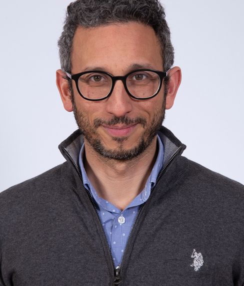

Professor · Statistical Machine Learning & Signal Processing
Mohammed Nabil
El Korso
Statistical inference and generative AI for robust learning with incomplete, noisy, mismatched data, applied to radio-astronomy, climate data analysis and Earth observation.
Paris-Saclay University — CentraleSupélec · Laboratoire des Signaux et Systèmes (L2S, CNRS)

News
- 2026 Appointed Technical Co-Chair of the 2027 IEEE Statistical Signal Processing Workshop (SSP 2027). ssp27.ieeesps.org →
- 2026 New tutorial article, “Missing Data in Signal Processing and Machine Learning: Models, Methods, and Modern Approaches,” accepted in IEEE Signal Processing Magazine. DOI →
- 2026 Paper accepted at ICLR 2026: “Fisher-Rao Sensitivity for Out-of-Distribution Detection in Deep Neural Networks.” OpenReview →
- 2026 New ANR project funded — COMRADE (Covariance Matrices and Deep Learning for Earth Observation), starting 2027.
- 2025 Appointed CNRS Scientific Delegate, Section 3.
Research
Statistical machine learning
Generative models, learning under distribution shift, and out-of-distribution detection in deep neural networks.
Statistical inference & signal processing
Robust and adaptive estimation/detection theory, inference with missing data, and low-rank / structured covariance models.
Applications
Climate data analysis, radio-astronomy interferometric imaging, Earth observation, and array processing (radar, SAR).
Selected publications
All publications ↓A curated selection of recent and representative work. The complete list — journal articles, conference papers, book chapters and books — is on this page in full, further down, and also on Google Scholar and DBLP.
-
Missing Data in Signal Processing and Machine Learning: Models, Methods, and Modern Approaches
IEEE Signal Processing Magazine, vol. 43, no. 4 · 2026
-
Fisher-Rao Sensitivity for Out-of-Distribution Detection in Deep Neural Networks
ICLR 2026 Conference
-
Elliptically Symmetric Distributions in Signal Processing and Machine Learning
Book, Springer Nature · December 2024
-
Amortized Variational Inference for Logistic Regression with Missing Covariates
arXiv preprint arXiv:2603.21244
-
Robust Low-Rank Covariance Matrix Estimation with a General Pattern of Missing Values
Signal Processing, vol. 195, p. 108460 · 2022
Editorial activities
- 2024– Senior Area Editor — IEEE Signal Processing Letters
- 2023–2025 Associate Editor — IEEE Transactions on Signal Processing
- 2019– Handling Editor — Signal Processing, Elsevier
- 2026– EURASIP Academy Mentor
- 2024– Associate Member — TAC-SPMuS, EURASIP
- 2026– Board Member — GRETSI Association
Teaching
Current courses
- Computational statistics for signal & image processing — M2 ATSI, Paris-Saclay University / CentraleSupélec
- Robust statistics for signal processing — M2 ATSI, Paris-Saclay University / CentraleSupélec — course materials
- Traitement du signal (TPs) — M1 E3A, Paris-Saclay University — course materials
Past courses
- Advanced signal processing with hypothesis testing — M1 EESC, Université Paris Nanterre
- Expectation-maximization algorithms and robust statistical learning applications — M2 ATSI, Université Paris-Saclay
- Digital signal processing — S4, IUT de Ville d'Avray
- Electronics and signal processing — S3, IUT de Ville d'Avray
- Software tools advancement — S3, IUT de Ville d'Avray
- Statistics and reliability — Licence professionnelle, IUT de Ville d'Avray
- Industrial computing — S1, IUT de Ville d'Avray
- Digital electronics — S1, IUT de Ville d'Avray
Advising & alumni
Current PhD students
- 2026– Louis-Ferdinand Marignier — New geometries beyond Riemannian geometry: application to statistical learning on manifolds
- 2025– Weixi Sun — Non-stationary statistical learning for climate downscaling with climate change
- 2025– Duong Nguyen — Climate projections using generative models
- 2025– Antonin Bertrand — Application of information geometry to sonar data
- 2025– Anas Ibrahim — Contributions to robust processing through subspace learning and data completion
- 2023– Mohamed Cherifi — Statistical learning under generalized linear model with missing covariate for hyperspectral image classification
Current postdoctoral researchers
- Jan. 2026– Jihanne El Haouari — Statistical learning for cosmological exploration at 21 cm
- Nov. 2025– Preeti Meena — Radar detection through rectified flow matching
- Oct. 2025– Pradeebane Vaittinada Ayar — Model-based statistical downscaling
PhD alumni
- 2021–2025 Jianhua Wang — Signal-processing-based design methods for radioastronomy
- 2022–2025 Nawel Meftah — Smart metasurfaces for communications
- 2022–2025 Nawel Arab — Maximum likelihood and statistical learning for dynamic imaging in radio astronomy
- 2022–2025 Dana El Hajjar — Recursive learning for incomplete SAR displacement time series for Earth deformation observation
- 2020–2023 Yassine Mhiri — Statistical signal processing for radio-telescopes
- 2017–2020 Bruno Mériaux — Robust processing for multi-sensor systems
- 2017–2020 Abdallah Bouiba — Adaptive detection for embedded anti-collision radar
- 2016–2019 Rayen BenAbdellah — Statistical signal processing utilizing low-rank priors with detection applications
- 2015–2018 Virginie Ollier — Robust calibration methods in radio astronomy
- 2015–2018 Lucien Bacharach — Fundamental error limits for signal estimation with rupture points
- 2013–2016 Astrid Rubiano Fonseca — Smart control of soft robotic hand prosthesis
- 2012–2016 Xin Zhan — MIMO radar direction estimation and performance analysis
Postdoctoral alumni
- 2024–2025 Shuyu Dong (Paris-Saclay University – L2S) — Causal structure learning and statistics
- 2020–2021 Alexandre Hippert-Ferrer — Handling missing data in SAR displacement time series
- Feb.–Aug. 2020 Rémi André — Semi-parametric regression using empirical likelihood
- 2013–2014 Tao Bao — Cramér-Rao bound investigation for near-field source localization
All publications
The complete record — books, book chapters, preprints, journal articles and conference papers.
Books
J-P. Delmas, M. N. El Korso, F. Pascal, and S. Fortunati, "Elliptically Symmetric Distributions in Signal Processing and Machine Learning," Springer Nature, December 2024
Book Chapters
A. Hippert-Ferrer, M. N. El Korso, "Robust estimation with missing data for elliptical distributions," Springer Nature, December 2024
M. Haardt, M. Pesavento, F. Röemer, M. N. El Korso, "Subspace Methods and Exploitation of Special Array Structures," Academic Press Library in Signal Processing, Elsevier, 2014
V. Ollier, M. N. El korso, R. Boyer, P. Larzabal et al., "French SKA White Book - The French community towards the Square Kilometre Array," SKA-France Coordination, 2017
Preprints
M. Cherifi et al., "Amortized Variational Inference for Logistic Regression with Missing Covariates," arXiv:2603.21244
P. Meena et al., "Radar Detection through Rectified Flow Matching," arXiv:2603.18995
M. Cherifi, M. N. El Korso, A. Hippert-Ferrer, Y. Yan, "Robust Expectation-Maximization for Covariance Estimation in SIRV Models with Missing Data: Application to InSAR Time Series," arXiv:2606.22628
M. Savida, M. N. El Korso, "Robust Covariance Estimation for Cell-wise Contaminated and Partially Observed Data via Expectation Maximization Algorithm," submitted
D. El Hajjar et al., "Sliding Interferometric Phase Linking for Sequential Phase Estimation in long InSAR time-series," submitted
N. Arab, M. N. El Korso, I. Vin, P. Larzabal, "Stochastic Expectation Maximization for Robust State-Space Radio Interferometric Imaging," arXiv:2606.23944
Journal Papers
A. Nguyen, A. Bertrand, S. Le Hégarat-Mascle, E. Aldea, F. Florin, M. N. El Korso, R. Lustrat, "Fisher-Rao Sensitivity for Out-of-Distribution Detection in Deep Neural Networks," ICLR 2026
A. Hippert-Ferrer, A. Sportisse, A. Javaheri, M. N. El Korso, D. Palomar, "Missing Data in Signal Processing & Machine Learning: Models, Methods & Modern Approaches," IEEE Signal Processing Magazine, 2026
J. Wang, M. N. El Korso, L. Bacharach, P. Larzabal, "Learning-based probabilistic subarrays switching for robust low-cost interferometric imaging," IEEE Transactions on Computational Imaging, Vol. 12, pp. 491-504, 2026
M. Cherifi, M. N. El Korso, A. Mesloub, "EM Based Inference for Logistic Models with Missing Mixed-Effects Covariates," Signal Processing Journal, Elsevier, Vol. 246, September 2026, p. 110631
M. Cherifi, M. N. El Korso, A. Mesloub, S. Fortunati, L. Ferro-Famil, "Multiclass Logistic Regression with Missing Gaussian Mixture Covariates," Circuits, Systems, and Signal Processing, Springer Nature, 2026
D. El Hajjar, G. Ginolhac, Y. Yan, M. N. El Korso, "Sequential Covariance Fitting for InSAR Phase Linking," IEEE Transactions on Geoscience and Remote Sensing, Vol. 63, 2025
N. Meftah, B. Ratni, M. N. El Korso, N. Buroku, "Direction finding by learning-assisted programmable metasurface," Journal of Applied Physics, Vol. 138, 134902, 2025
M. Cherifi, X. Zhu, M. N. El Korso, A. Mesloub, "Maximum likelihood for logistic regression model with incomplete and hybrid-type covariates," IEEE Signal Processing Letters, Vol. 32, pp. 2808-2812, 2025
N. Arab, Y. Mhiri, I. Vin, M. N. El Korso, P. Larzabal, "Unrolled expectation maximization algorithm for radio interferometric imaging in presence of non gaussian interferences," Signal Processing, Elsevier, Vol. 237, 110035, 2025
M. Cherifi, M. N. El Korso, S. Fortunati, A. Mesloub, L. Ferro-Famil, "Robust inference with incompleteness for logistic regression model," Signal Processing, Elsevier, Vol. 236, November 2025, p. 110027
J. Wang, M. N. El Korso, L. Bacharach, P. Larzabal, "Low-rank EM-based imaging for large-scale switched interferometric arrays," IEEE Signal Processing Letters, Vol. 32, pp. 41-45, 2025
C. Cano, M. N. El Korso, E. Chaumette, P. Larzabal, "Kalman filter for dynamic source power estimation based on empirical covariances," Signal Processing, Elsevier, Vol. 230, 109868, May 2025
D. El Hajjar, G. Ginolhac, Y. Yan, M. N. El Korso, "Robust sequential phase estimation using Multi-temporal SAR image series," IEEE Signal Processing Letters, Vol. 32, pp. 811-815, December 2025
X. Ren, Y. Wei, L. Zhu, M. N. El Korso, "Traffic and scenario adaptive OFDM-IM communication for vehicular networks," Sensors, 2025
J. Wang, M. N. El Korso, L. Bacharach, P. Larzabal, "RFI-aware and low-cost maximum likelihood imaging for high-sensitivity radio telescopes," IEEE Signal Processing Letters, Vol. 31, pp. 2960-2964, October 2025
N. Meftah, B. Ratni, M. N. El Korso, N. Burokur, "Enhanced-resolution learning-based direction of arrival estimation by programmable metasurface," Advanced Electronic Materials, 2024
N. Meftah, B. Ratni, M. N. El Korso, N. Burokur, "Programmable meta-reflector for multiple tasks in intelligent connected environments," Advanced Materials Technologies, Vol. 9, Issue 12, June 18, 2024
Y. Mhiri, M. N. El Korso, A. Breloy, P. Larzabal, "Regularized maximum likelihood estimation for radio interferometric imaging in the presence of radiofrequency interferences," Signal Processing, Elsevier, Vol. 220, 109430, 2024
J. Wang, L. Bacharach, P. Larzabal, M. N. El Korso, "A comparison of antenna placement criteria based on the Cramér-Rao and Barankin bounds for interferometer arrays," Signal Processing, Elsevier, Vol. 219, 109404, 2024
C. Cano, N. Arab, E. Chaumette, P. Larzabal, M. N. El Korso, I. Vin, "Kalman filter for radio source power and direction of arrival estimation," European Association for Signal Processing Special Issue, 2024
B. Mériaux, C. Ren, A. Breloy, M. N. El Korso, P. Forster, "Matched and Mismatched Estimation of Kronecker Product of Linearly Structured Scatter Matrices under Elliptical Distributions," IEEE Transactions on Signal Processing, Vol. 69, pp. 603-616
H. Abadlia, M. ammar, K. Ibrahim, M. N. El Korso, M. Abdelmadjid, "Coherent wide band signals direction of arrival finding based on subspace methods," Circuits, Systems, and Signal Processing, Springer, Vol. 42, pp. 1663-1684, 2023
A. Hippert-Ferrer, M. N. El Korso, A. Breloy, G. Ginolhac, "Robust low-rank covariance matrix estimation with a general pattern of missing values," Signal Processing, Vol. 195, June 2022, p. 108460
Y. Mhiri, M. N. El Korso, A. Breloy, P. Larzabal, "Multifrequency Array Calibration in Presence of Radio Frequency Interferences," Signal Processing, Elsevier, Vol. 199, October 2022, p. 108613
A. Hippert-Ferrer, M. N. El Korso, A. Breloy, G. Ginolhac, "Robust Mean and Covariance Matrix Estimation Under Heterogeneous Mixed-Effects Model with Missing Values," Signal Processing, Vol. 188, November 2021, p. 108195
I. Kakouche, A. Maali, M. N. El Korso, A. Mesloub, M. S. Azzaz, "Non-contact Measurement of Respiration and Heart Rates Based on Subspace Methods and Iterative Notch Filter Using UWB Impulse Radar," Journal of Physics D: Applied Physics, Vol. 55, No. 3, 2021
I. Kakouche, A. Maali, M. N. El Korso, A. Mesloub, M. S. Azzaz, "Fast and low cost-effective method for non-contact respiration rate tracking using UWB impulse radar," Sensors and Actuators: A. Physical, Elsevier, Vol. 329, October 2021, p. 112814
I. Kakouche, A. Maali, M. N. El Korso, A. Mesloub, M. S. Azzaz, "Joint Vital Signs and Position Estimation of Multiples Persons using SIMO Radar," Electronics, Vol. 2, Issue 10, 2021
R. Ben Abdallah, A. Breloy, M. N. El Korso, D. Lautru, "Bayesian Signal Subspace Estimation with Compound Gaussian Sources," Signal Processing, Vol. 167, 2020, p. 107310
L. Bacharach, M. N. El Korso, A. Renaux, J.-Y. Tourneret, "A Hybrid Lower Bound for Parameter Estimation of Signals with Multiple Change-Points," IEEE Transactions on Signal Processing, Vol. 67, Issue 5, pp. 1267-1279, March 1, 2019
B. Mériaux, C. Ren, M. N. El Korso, A. Breloy, P. Forster, "Asymptotic Performance of Complex M-estimators for Multivariate Location and Scatter Estimation," IEEE Signal Processing Letters, Vol. 26, Issue 2, pp. 367-371, February 2019
R. Ben Abdellah, A. Miam, A. Breloy, A. Taylor, M. N. El Korso, D. Lutru, "Detection Methods Based on Structured Covariance Matrices for Multivariate SAR Images Processing," IEEE Geoscience and Remote Sensing Letters, Vol. 16, Issue 7, pp. 1160-1164, July 2019
B. Mériaux, C. Ren, M. N. El Korso, A. Breloy, P. Forster, "Robust Estimation of Structured Scatter Matrices in (Mis)matched Models," Signal Processing Journal, Elsevier, Vol. 165, December 2019, pp. 163-174
A. Bouiba, M. N. El Korso, A. Breloy, P. Forster, M. Hamadouche, M. Lagha, "Two dimensional robust source localization under non-Gaussian noise," Circuits, Systems & Signal Processing, Springer
J. P. Delmas, H. Gazzah, M. N. El Korso, "Improved localization of near-field sources using a realistic signal propagation model and optimally-placed sensors," Digital Signal Processing, Vol. 95, 2019, p. 102579
B. Mériaux, X. Zhang, M. N. El Korso, M. Pesavento, "Iterative Marginal Maximum Likelihood DOD and DOA Estimation for MIMO Radar in the Presence of SIRP Clutter," Signal Processing Journal, Elsevier, Vol. 155, February 2019, pp. 384-390
V. Ollier, M. N. El Korso, A. Ferrari, R. Boyer, P. Larzabal, "Robust distributed calibration of radio interferometers with direction dependent distortions," Signal Processing Journal, Elsevier, Vol. 153, December 2018, pp. 348-354
M. Brossard, M. N. El Korso, M. Pesavento, R. Boyer, P. Larzabal, S. Wijnholds, "Parallel Multi-Wavelength Calibration Algorithm for Radio Astronomical Arrays," Signal Processing Journal, Elsevier, Vol. 145, April 2018, pp. 258-271
A. Mennad, S. Fortunati, M. N. El Korso, A. Younsi, A. M. Zoubir, A. Renaux, "Slepian-Bangs-type formulas and the related Misspecified Cramér-Rao Bounds for Complex Elliptically Symmetric distributions," Signal Processing Journal, Elsevier, Vol. 142, January 2018, pp. 320-329
T. Boukaba, M. N. El Korso, A. M. Zoubir, D. Berkani, "Bootstrap Based Sequential Detection in Non-Gaussian Correlated Clutter," Progress in Electromagnetics Research Journal, Vol. 81, pp. 125-140, 2018
V. Ollier, M. N. El Korso, R. Boyer, P. Larzabal, M. Pesavento, "Robust Calibration of Radio Interferometers in Non-Gaussian Environment," IEEE Transactions on Signal Processing, Vol. 65, Issue 21, pp. 5649-5660, November 2017
E. Chaumette, A. Renaux, M. N. El Korso, "A class of Weiss-Weinstein bounds and its relationship with the Bobrovsky-Mayer-Wolf-Zakai bounds," IEEE Transactions on Information Theory, Vol. 63, Issue 4, pp. 2226-2240, April 2017
L. Bacharach, A. Renaux, M. N. El Korso, E. Chaumette, "Weiss-Weinstein bound on multiple change-points estimation," IEEE Transactions on Signal Processing, Vol. 65, Issue 10, pp. 2686-2700, May 2017
X. Zhang, M. N. El Korso, M. Pesavento, "MIMO radar target localization and performance evaluation under SIRP clutter," Signal Processing Journal, Elsevier, Vol. 130, January 2017, pp. 217-232
A. Mennad, A. Younsi, M. N. El Korso, A. M. Zoubir, "Adaptive Detection of Range-Spread Target in Compound-Gaussian Clutter Without Secondary Data," Digital Signal Processing, Elsevier, Vol. 60, January 2017, pp. 90-98
J.-P. Delmas, M. N. El Korso, H. Gazzah, M. Castella, "CRB analysis of planar antenna array for optimizing near-field source localization," Signal Processing Journal, Elsevier, Vol. 127, October 2016, pp. 117-134
M. N. El Korso, R. Boyer, P. Larzabal, B.-H. Fleury, "Estimation Performance for the Bayesian Hierarchical Linear Model," IEEE Signal Processing Letters, Vol. 23, April 2016, pp. 488-492
T. Bao, M. N. El Korso, H. Ouslimani, "Cramér-Rao Bound and Statistical Resolution Limit Investigation for Near-field Source Localization," Digital Signal Processing, Elsevier, Vol. 48, January 2016, pp. 137-147
C. Ren, M. N. El Korso, J. Galy, E. Chaumette, P. Larzabal, A. Renaux, "On the Accuracy and Resolvability of Vector Parameter Estimates," IEEE Transactions on Signal Processing, Vol. 62, Issue 14, pp. 3682-3694, July 2014
M. N. El Korso, A. Renaux, R. Boyer, S. Marcos, "Deterministic Performance Bounds on the Mean Square Error for Near Field Source Localization," IEEE Transactions on Signal Processing, Vol. 61, Issue 4, pp. 871-877, February 2013
M. N. El Korso, R. Boyer, A. Renaux, S. Marcos, "Statistical resolution limit for source localization with clutter interference in a MIMO radar context," IEEE Transactions on Signal Processing, Vol. 60, Issue 2, pp. 987-992, February 2012
M. N. El Korso, R. Boyer, A. Renaux, S. Marcos, "On the Asymptotic Resolvability Of Two Point Sources in Known Subspace Interference Using a GLRT-Based Framework," Signal Processing, Elsevier, Vol. 92, Issue 10, pp. 2471-2481, October 2012
M. N. El Korso, R. Boyer, A. Renaux, S. Marcos, "Statistical Analysis of Achievable Resolution Limit in the Near Field Source Localization Context," Signal Processing, Elsevier, Vol. 92, Issue 2, pp. 547-552, February 2012
M. N. El Korso, R. Boyer, A. Renaux, S. Marcos, "Statistical resolution limit for the multidimensional harmonic retrieval model: Hypothesis test and Cramér-Rao bound approaches," EURASIP Journal on Advances in Signal Processing, June 2011, pp. 1-14
M. N. El Korso, R. Boyer, A. Renaux, S. Marcos, "Statistical resolution limit of the uniform linear cocentered orthogonal loop and dipole array," IEEE Transactions on Signal Processing, Vol. 59, Issue 1, pp. 425-431, January 2011
M. N. El Korso, R. Boyer, A. Renaux, S. Marcos, "Conditional and unconditional Cramér-Rao bounds for near-field source localization," IEEE Transactions on Signal Processing, Vol. 58, Issue 5, pp. 2901-2907, May 2010
Conference Papers
A. Ibrahim, C. Ren, I. Hinostroza, A. Breloy, M. N. El Korso, "Robust covariance matrix estimation for uniform rectangular array," IEEE ICASSP, Barcelona, Spain, 2026
N. Meftah, B. Ratni, M. N. El Korso, N. Burokur, "Intelligent Metasurface for Direction Finding," IEEE CAMA, 2025
D. El Hajjar, A. Breloy, G. Ginolhac, M. N. El Korso, Y. Yan, "An efficient approach for estimating the phases of large SAR image time series," EUSIPCO, 2025
N. Arab, I. Vin, M. N. El Korso, P. Larzabal, "Expectation Maximization for Robust State-Space Radio Interferometric Imaging," EUSIPCO, 2025
S. Dong, M. N. El Korso, A. Tenenhaus, L. Le Brusquet, "Learning Measurement Models via Subspace Identification and Clustering," IEEE SSP, 2025
N. Meftah, B. Ratni, M. N. El Korso, N. Burokur, "Direction Finding by Reconfigurable Metasurface via Machine Learning," IEEE AP-S/URSI 2025
N. Meftah, B. Ratni, M. N. El Korso, N. Burokur, "Mobile Target Tracking With a Reconfigurable Metasurface in the X-Band," IEEE AP-S/URSI 2025
N. Meftah, B. Ratni, M. N. El Korso, N. Burokur, "Programmable Metasurface for DOA Estimation from Mobile Objects and Wave Redirection," EuCAP 2025
N. Meftah, B. Ratni, M. N. El Korso, N. Burokur, "Direction-Of-Arrival Estimation by Metasurface Assisted by Deep Learning for IoT Systems," EuCAP 2025
C. Cano, E. Chaumette, P. Larzabal, M. N. El Korso, "Kalman filter for dynamic estimation of stochastic radio source power and DoA," Asilomar 2024
N. Arab, Y. Mhiri, I. Vin, M. N. El Korso, P. Larzabal, "Unrolled Expectation Maximization for Sparse Radio Interferometric Imaging," EUSIPCO, 2024
D. El Hajjar, Y. Yan, G. Ginolhac, M. N. El Korso, "Sequential phase linking: progressive integration of SAR images for operational phase estimation," IEEE IGARSS, 2024
N. Meftah, B. Ratni, M. N. El Korso, N. Burokur, "Direction-Of-Arrival Estimation by a Programmable Metasurface," EuCAP 2024
N. Meftah, B. Ratni, M. N. El Korso, N. Burokur, "Electronic beam steering using a reconfigurable metasurface," International Conference on Metamaterials, Photonic Crystals and Plasmonics (META'23), 2023
N. Meftah, B. Ratni, M. N. El Korso, N. Burokur, "Métasurface reconfigurable pour l'estimation de la direction d'arrivée," Dixième Conférence Plénière du GDR ONDES, 2023
N. Arab, C. Cano, I. Vin, M. N. El Korso, E. Chaumette, P. Larzabal, "Kalman filter for dynamic imaging based on complex empirical covariances," IEEE CAMSAP, 2023
C. Cano, N. Arab, E. Chaumette, P. Larzabal, M. N. El Korso, "Kalman filter for radio astronomy dynamic imaging based on empirical covariances," AeroSpace 2023
J. Wang, L. Bacharach, M. N. El Korso, P. Larzabal, "Antenna sub-array switching strategy for low-cost & high-resolution radio-astronomical imaging," ICSPCC 2023
H. Brehier, A. Breloy, M. N. El Korso, S. Kumar, "Robust and globally sparse PCA via majorization-minimization and variable splitting," ICASSP 2023
J. Wang, L. Bacharach, M. N. El Korso, P. Larzabal, "Barankin bound vs Cramér-Rao bound for interferometric-like array design at low SNR," EUSIPCO 2023
N. Arab, C. Cano, I. Vin, M. N. El Korso, E. Chaumette, P. Larzabal, "Filtre de Kalman à base de matrices de covariance empiriques : application à l'imagerie dynamique en radioastronomie," GRETSI 2023
J. Wang, Y. Mhiri, L. Bacharach, M. N. El Korso, P. Larzabal, "Borne Barankin vs Borne Cramér-Rao pour la géométrie de réseaux d'antennes en radioastronomie," GRETSI 2023
Y. Mhiri, M. N. El Korso, A. Breloy, P. Larzabal, "Imagerie radio-interférométrique robuste par dépliement neuronal," GRETSI 2023
Y. Mhiri, M. N. El Korso, A. Breloy, P. Larzabal, "A Robust EM Algorithm for Radio Interferometric Imaging in The Presence of Outliers," IEEE Workshop on Signal Processing Systems (SiPS), pp. 1-5, 2022
Y. Mhiri, M. N. El Korso, A. Breloy, P. Larzabal, "Algorithme SAGE pour la calibration robuste de radio-interféromètres en présence d'interférences," GRETSI, 2022
Y. Mhiri, M. N. El Korso, L. Bacharach, A. Breloy, P. Larzabal, "Expectation-Maximization Based Direction of Arrival Estimation Under a Mixture of Noise," EUSIPCO, 2021
M. Trinh-Hoang, M. N. El Korso, M. Pesavento, "A partially-relaxed robust DOA estimator under non-Gaussian low-rank interference and noise," ICASSP, 2021
A. Bouiba, T. Boukaba, M. N. El Korso, S. A. Saidj, "Multiple targets detection in compound gaussian clutter without secondary data," CEE, 2021
B. Mériaux, C. Ren, A. Breloy, M. N. El Korso, P. Forster, "Efficient Estimation of Kronecker Product of Linear Structured Scatter Matrices under t-distribution," EUSIPCO, 2020
M. Brossard, V. Ollier, M. N. El Korso, R. Boyer, P. Larzabal, "Fast decentralized multi-frequency calibration for DOA estimation with distributed sensors," DAT, 2020
B. Mériaux, C. Ren, A. Breloy, M. N. El Korso, P. Forster, "Modified Sparse Subspace Clustering for Radar Detection in Non-stationary Clutter," IEEE CAMSAP, 2019
L. Bacharach, J. Galy, E. Chaumette, F. Vincent, A. Renaux, M. N. El Korso, "An example of non-standard behavior of a maximum likelihood estimator in the large sample regime," IEEE CAMSAP, 2019
R. Ben Abdallah, A. Breloy, M. N. El Korso, D. Lautru, "Bayesian Robust Signal Subspace Estimation in Non-Gaussian Environment," EUSIPCO'19
R. Ben Abdallah, A. Breloy, A. Taylor, M. N. El Korso, D. Lautru, "Signal Subspace Change Detection in Structured Covariance Matrices," EUSIPCO'19
B. Mériaux, C. Ren, A. Breloy, M. N. El Korso, P. Forster, J.-P. Ovarlez, "On the Recursions of Robust COMET Algorithm for Convexly Structured Shape Matrix," EUSIPCO'19
B. Mériaux, C. Ren, M. N. El Korso, A. Breloy, P. Forster, "Estimation robuste de matrices de dispersion structurées pour des modèles bien/mal spécifiés," GRETSI, 2019
R. Ben Abdallah, A. Breloy, M. N. El Korso, D. Lautru, "Détection de changement de sous-espace signal dans des matrices de covariance structurées," GRETSI, 2019
B. Mériaux, C. Ren, M. N. El Korso, A. Breloy, P. Forster, "Une version récursive de RCOMET pour l'estimation robuste de matrices de forme à structure convexe," GRETSI, 2019
A. Boudehane, R. Boyer, V. Ollier, M. N. El Korso, A. Ferrari, P. Larzabal, "Performance bound for robust array calibration in radio interferometry," GRETSI, 2019
A. Mian, L. Bacharach, G. Ginolhac, A. Renaux, M. N. El Korso, J.-P. Ovarlez, "Designing SAR Images Change-Point Estimation Strategies using an MSE Lower Bound," ICASSP 2019
A. Abdellah, M. N. El Korso, T. Boukaba, "Robust joint relaxed maximum likelihood calibration and direction of arrivals estimation with sparse arrays," CEE 2019
V. Ollier, M. N. El Korso, A. Ferrari, R. Boyer, P. Larzabal, "Bayesian Calibration Using Different Prior Distributions: An Iterative Maximum a Posteriori Approach for Radio Interferometers," EUSIPCO'18, Rome, Italy
L. Bacharach, A. Renaux, M. N. El Korso, "Prior Influence on Weiss-Weinstein Bounds for Multiple Change-Point Estimation," EUSIPCO'18, Rome, Italy
A. Breloy, M. N. El Korso, A. Panahi, H. Krim, "Robust Subspace Clustering for Radar Detection," EUSIPCO'18, Rome, Italy
V. Ollier, M. N. El Korso, A. Ferrari, R. Boyer, P. Larzabal, "Robust calibration of radio interferometers in multi-frequency scenario," ICASSP 2018, Calgary, Canada
B. Meriaux, C. Ren, M. N. El Korso, A. Breloy, P. Forster, "Efficient estimation of scatter matrix with convex structure under t-distribution," ICASSP 2018, Calgary, Canada
B. Meriaux, C. Ren, M. N. El Korso, A. Breloy, P. Forster, "Robust-COMET for Covariance Estimation in Convex Structures: Algorithm and Statistical Properties," IEEE CAMSAP, Curaçao, 2017
R. Ben Abdallah, A. Breloy, M. N. El Korso, D. Lautru, H. Ouslimani, "Minimum Mean Square Distance Estimation of Subspaces in presence of Gaussian sources with application to STAP detection," NCMIP, Paris, 2017
A. Taylor, A. Breloy, M. N. El Korso, "Détection d'anomalie de composantes principales pour des cibles mobiles étendues en SAR," GRETSI 2017
V. Ollier, M. N. El Korso, R. Boyer, P. Larzabal, M. Pesavento, "Algorithme de calibration robuste dans un contexte de radio interférométrie," GRETSI 2017
T. Bao, A. Breloy, M. N. El Korso, K. Abed-Meraim, H. H. Ouslimani, "Performance analysis of direction-of-arrival and polarization estimation using a non-uniform linear COLD array," DAT-2017, Algiers, Algeria
R. Ben Abdallah, A. Breloy, M. N. El Korso, D. Lautru, H. Ouslimani, "Estimation de sous-espaces en présence de sources gaussiennes avec application à la détection STAP," GRETSI 2017
L. Bacharach, M. N. El Korso, A. Renaux, J.-Y. Tourneret, "A Bayesian Lower Bound for Parameter Estimation of Poisson Data Including Multiple Changes," ICASSP 2017, New Orleans, USA
L. Bacharach, G. Bibiche, A. Renaux, M. N. El Korso, "Bornes bayésiennes pour la localisation d'un point de rupture : application à des processus exponentiels," GRETSI 2017
V. Ollier, R. Boyer, M. N. El Korso, P. Larzabal, "Borne Bayésienne pour les systèmes large-échelle : cas d'un bruit à queue lourde," GRETSI 2017
M. Brossard, M. N. El Korso, M. Pesavento, R. Boyer, P. Larzabal, "Calibration of Radio Interferometers Using a Sparse DOA Estimation Framework," EUSIPCO 2016, Budapest, Hungary
V. Ollier, M. N. El Korso, R. Boyer, P. Larzabal, M. Pesavento, "Relaxed concentrated MLE for robust calibration of radio interferometers," EUSIPCO 2016, Budapest, Hungary
V. Ollier, R. Boyer, M. N. El Korso, P. Larzabal, "Bayesian Lower Bounds for Dense or Sparse (Outlier) Noise in the RMT Framework," IEEE SAM-2016, Rio, Brazil
L. Bacharach, M. N. El Korso, A. Renaux, "Weiss-Weinstein bound for an abrupt unknown frequency change," IEEE SSP-16, Palma de Mallorca, 2016
V. Ollier, M. N. El Korso, R. Boyer, P. Larzabal, M. Pesavento, "Joint ML calibration and DOA estimation with separated arrays," ICASSP 2016, Shanghai, China
X. Zhang, M. N. El Korso, M. Pesavento, "Maximum likelihood and maximum a posteriori direction-of-arrival estimation in the presence of SIRP noise," ICASSP 2016, Shanghai, China
P. Zarka et al., "NenuFAR: Instrument description and science case," IEEE ICATT, Kharkiv, Ukraine, 2015
L. Bacharach, A. Renaux, M. N. El Korso, E. Chaumette, "Weiss-Weinstein Bound for Change-Point Estimation," IEEE CAMSAP-2015, Cancun, Mexico
C. Ren, M. N. El Korso, J. Galy, E. Chaumette, P. Larzabal, A. Renaux, "Une nouvelle approche de résolution limite dans le cadre d'estimation paramétrique multidimensionnelle," GRETSI 2015, Lyon, France
A. Rubiano, J. L. Ramirez, M. N. El Korso, L. Gallimard, N. Jouandeau, O. Polit, "Elbow Flexion And Extension Identification Using Surface Electromyography Signals," EUSIPCO 2015, Nice, France
C. Ren, M. N. El Korso, J. Galy, E. Chaumette, P. Larzabal, A. Renaux, "Performance bounds under misspecification model for MIMO Radar application," EUSIPCO 2015, Nice, France
A. Rubiano, J. L. Ramirez, M. N. El Korso, L. Gallimard, N. Jouandeau, O. Polit, "Best Feature Selection and Classification For Elbow Flexion And Extension Movements," NCMIP, Cachan, France, 2015
J. L. Ramirez, A. Rubiano, N. Jouandeau, M. N. El Korso, L. Gallimard, O. Polit, "Hybrid kinematic model applied to the under-actuated robotic hand prosthesis ProMain-I and experimental evaluation," ICORR, Singapore, 2015
J. L. Ramirez, A. Rubiano, L. Gallimard, M. N. El Korso, N. Jouandeau, O. Polit, "Modeling and Validation Test of Underactuated Robotic Finger," ECCOMAS 2015, Azores, Portugal
A. Rubiano, M. N. El Korso, O. Polit, L. Gallimard, N. Jouandeau, "Signal processing for the control of a robotic hand emulated in an embedded system," DFH-UFA'2014, Dresden, Germany
J. L. Ramirez, M. N. El Korso, O. Polit, L. Gallimard, N. Jouandeau, "Design mathematical modelling and simulation of an artificial muscle for a hand prosthesis," DFH-UFA'2014, Dresden, Germany
M. N. El Korso, A. Renaux, P. Forster, "CRLB under K-distributed observation with parameterized mean," IEEE SAM-2014, A Coruña, Spain
M. N. El Korso, "On Performance Analysis in Array Processing: Lower Bounds on the Mean Square Error and Statistical Resolution Limit," ICIT 2014, Dubai, UAE
X. Zhang, M. N. El Korso, M. Pesavento, "MIMO Radar Performance Analysis under K-distributed Clutter," ICASSP-2014, Florence, Italy
M. N. El Korso, R. Boyer, S. Marcos, "A root-finding technique for direction of arrival estimation," DAT-2014, Algiers, Algeria
M. N. El Korso, P. Forster, F. Pascal, P. Larzabal, "Résolution limite dans un contexte de localisation active de sources," GRETSI 2013, Brest, France
R. Boyer, M. N. El Korso, A. Renaux, S. Marcos, "Coexistence of near-field and far-field sources: The angular resolution limit," NCMIP 2013, Cachan, France
X. Zhang, M. N. El Korso, M. Pesavento, "Angular resolution limit for deterministic correlated sources," ICASSP-2013, Montreal, Canada
M. N. El Korso, F. Pascal, M. Pesavento, "On the resolvability of closely spaced targets using a MIMO radar," IEEE Asilomar 2012, Pacific Grove, California
X. Zhang, M. N. El Korso, M. Pesavento, "Statistical Resolution Limit for Two Closely Spaced Stochastic Far Field Sources," EUSIPCO 2012, Bucharest, Romania
M. N. El Korso, M. Pesavento, "Performance analysis for near field source localization," IEEE SAM-12, Hoboken, NJ
D. T. Vu, M. N. El Korso, R. Boyer, A. Renaux, S. Marcos, "Résolution limite angulaire : approches basées sur la théorie de l'information et sur la théorie de la détection," GRETSI-11, Bordeaux, France
M. N. El Korso, R. Boyer, A. Renaux, S. Marcos, "Statistical Resolution Limit: Application to Passive Polarized Source Localization," DAT-2011, Algiers, Algeria
M. N. El Korso, R. Boyer, A. Renaux, S. Marcos, "Statistical resolution limit for source localization in a MIMO context," ICASSP-11, Prague, Czech Republic
D. T. Vu, M. N. El Korso, R. Boyer, A. Renaux, S. Marcos, "Angular Resolution Limit for Vector Sensor Arrays: Detection and Information Theory Approaches," IEEE SSP-11, Nice, France
M. N. El Korso, R. Boyer, A. Renaux, S. Marcos, "A GLRT-based framework for the multidimensional statistical resolution limit," IEEE SSP-11, Nice, France
M. N. El Korso, A. Renaux, R. Boyer, S. Marcos, "Bornes inférieures de l'erreur quadratique moyenne pour la localisation de sources en champ proche," GRETSI-11, Bordeaux, France
M. N. El Korso, R. Boyer, S. Marcos, "Sequential Source Localization Using the Projected Companion Matrix Approach," IEEE CAMSAP-09, Aruba
M. N. El Korso, R. Boyer, A. Renaux, S. Marcos, "Statistical resolution limits for multiple parameters of interest and for multiple signals," ICASSP-10, Dallas, TX
M. N. El Korso, G. Bouleux, R. Boyer, S. Marcos, "Sequential estimation of the range and the bearing using the zero-forcing MUSIC approach," EUSIPCO-09, Glasgow, Scotland
M. N. El Korso, R. Boyer, A. Renaux, S. Marcos, "Non-matrix closed form expressions of the Cramér-Rao bounds for near-field localization parameters," ICASSP-09, Taipei, Taiwan
M. N. El Korso, G. Bouleux, R. Boyer, S. Marcos, "Estimation séquentielle des paramètres de localisation en champ proche à l'aide de l'approche Zero-Forcing," Colloque GRETSI-09, Dijon, France